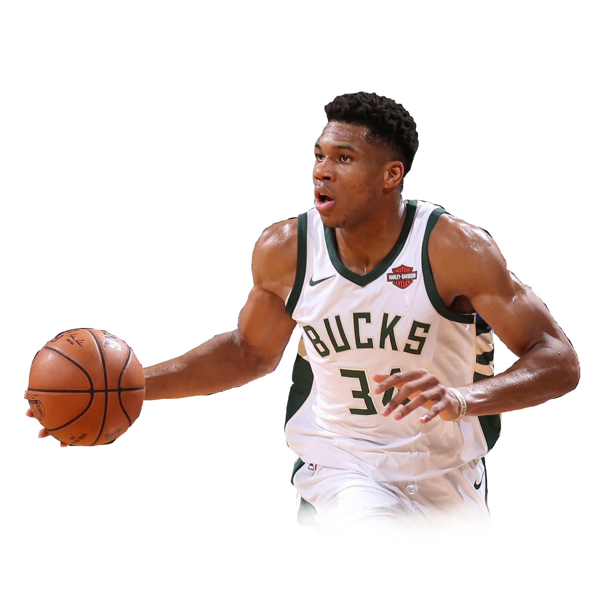

|

Giannis Antetokounmpo
Forward for the Milwaukee Bucks
|
Giannis Antetokounmpo: The Undisputed 2019 NBA League MVP
The MVP or Most Valuable Player award is one of the most coveted and respected personal achievements
a player can obtain. Each year, two or three significantly exceed league averages in terms of player statistics
and exemplify the pinnacle of leadership a player in the NBA, the National Basketball Association.
This past 2018-2019 season, NBA consumers witnessed the emergence of a star, Giannis Antetokounmpo,
and a scoring frenzy in James Harden. Though Antetokounmpo won the 2019 League MVP award, critics
and fans argue that Harden should have won the award.
We will now present our piece on why Giannis Antetokounmpo deserved the 2019 NBA MVP award over James Harden.
|

James Harden
Guard for the Houston Rockets
|